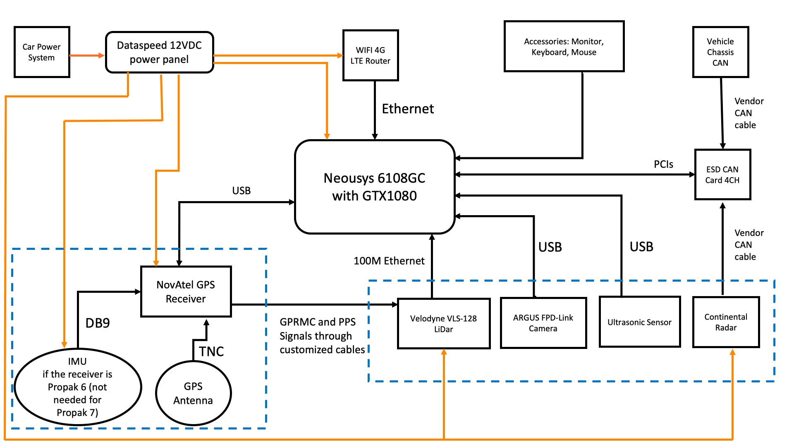

Apollo Auto


We choose to go to the moon in this decade and do the other things,
not because they are easy, but because they are hard.
-- John F. Kennedy, 1962
欢迎来到 Apollo 的 GitHub 页面！
Apollo 是一个高性能、灵活的架构，它加速了自动驾驶的开发、测试和部署。
关于业务和伙伴关系请访问 我们的网站。
目录
简介
Apollo 加载了新的模块和功能，但在使用它之前需要进行完美的校准和配置。请详细查看先决条件和安装步骤，以确保你有足够的能力建立和启动阿波罗。你也可以查看 Apollo 的架构概述，以进一步了解 Apollo 的核心技术和平台。
先决条件
[更新 2021-01] Apollo 平台（稳定版）现在升级了较新版本的软件包和库依赖，包括：
CUDA 升级至 11.1 版本，以支持 Nvidia Ampere（30x0 系列）GPU，NVIDIA 驱动程序 >=455.32
LibTorch（包括 CPU 和 GPU 版本）相应地升至 1.7.0 版本。
我们不期望你目前的工作受到干扰，但为了缓解你的迁移生活，你需要：
将主机上的 NVIDIA 驱动程序更新为 >=455.32 版本。（网络链接）
拉取最新的代码，在重启并登录到 Apollo 开发容器后运行以下命令：
# Remove Bazel output of previous builds
rm -rf /apollo/.cache/{bazel,build,repos}
# Re-configure bazelrc.
./apollo.sh config --noninteractive
配备了线控系统的车辆，包括但不限于线控刹车、线控转向、线控油门和线控换挡（Apollo目前在林肯 MKZ 上测试）
一台配备 8 核处理器和至少有 16GB 内存的机器
强烈建议使用英伟达图灵 GPU
Ubuntu 18.04
NVIDIA 驱动程序版本 455.32.00 及以上（网络链接
Docker-CE 19.03 版及以上（官方文档）
NVIDIA 容器工具包（官方文档）
请注意，建议你按照以下顺序安装阿波罗的各个版本。1.0 -> 你想测试的那个版本。这个建议背后的原因是，为了你和你周围人的安全，你需要确认个别硬件组件和模块是否正常运行，并在进展到更高和更有能力的版本之前清除各种版本测试案例。
独立版本
下图强调了每个 Apollo 版本的范围和功能：

Apollo 1.0 也被称为 自动 GPS 航点跟踪，在一个封闭的场所，如试车场或停车场内工作。这种安装是必要的，以确保阿波罗与您的车辆完美配合。下图列出了 Apollo 1.0 中的各个模块。
Apollo 1.5 是为了固定车道巡航。随着 LiDAR 的加入，使用该版本的车辆现在对周围环境有了更好的感知，可以更好地绘制其当前位置并规划其轨迹，以便在其车道上更安全地进行机动。请注意，黄色突出显示的模块是 1.5 版本的新增或升级内容”

Apollo 2.0 supports vehicles autonomously driving on simple urban roads. Vehicles are able to cruise on roads safely, avoid collisions with obstacles, stop at traffic lights, and change lanes if needed to reach their destination. Please note, the modules highlighted in Red are additions or upgrades for version 2.0.
Apollo 2.5 allows the vehicle to autonomously run on geo-fenced highways with a camera for obstacle detection. Vehicles are able to maintain lane control, cruise and avoid collisions with vehicles ahead of them.
Please note, if you need to test Apollo 2.5; for safety purposes, please seek the help of the
Apollo Engineering team. Your safety is our #1 priority,
and we want to ensure Apollo 2.5 was integrated correctly with your vehicle before you hit the road.

Apollo 3.0’s primary focus is to provide a platform for developers to build upon in a closed venue low-speed environment. Vehicles are able to maintain lane control, cruise and avoid collisions with vehicles ahead of them.

Apollo 3.5 is capable of navigating through complex driving scenarios such as residential and downtown areas. The car now has 360-degree visibility, along with upgraded perception algorithms to handle the changing conditions of urban roads, making the car more secure and aware. Scenario-based planning can navigate through complex scenarios, including unprotected turns and narrow streets often found in residential areas and roads with stop signs.
Apollo 5.0 is an effort to support volume production for Geo-Fenced Autonomous Driving. The car now has 360-degree visibility, along with upgraded perception deep learning model to handle the changing conditions of complex road scenarios, making the car more secure and aware. Scenario-based planning has been enhanced to support additional scenarios like pull over and crossing bare intersections.

Apollo 5.5 enhances the complex urban road autonomous driving capabilities of previous Apollo releases, by introducing curb-to-curb driving support. With this new addition, Apollo is now a leap closer to fully autonomous urban road driving. The car has complete 360-degree visibility, along with upgraded perception deep learning model and a brand new prediction model to handle the changing conditions of complex road and junction scenarios, making the car more secure and aware.

Apollo 6.0 incorporates new deep learning models to enhance the capabilities for certain Apollo modules. This version works seamlessly with new additions of data pipeline services to better serve Apollo developers. Apollo 6.0 is also the first version to integrate certain features as a demonstration of our continuous exploration and experimentation efforts towards driverless technology.

Architecture
Hardware/ Vehicle Overview

Hardware Connection Overview

Software Overview

Installation
Software installation guide - This step is required
Congratulations! You have successfully built out Apollo without Hardware. If you do have a vehicle and hardware setup for a particular version, please pick the Quickstart guide most relevant to your setup:
Quick Starts:
Documents
Technical Tutorials: Everything you need to know about Apollo. Written as individual versions with links to every document related to that version.
How-To Guides: Brief technical solutions to common problems that developers face during the installation and use of the Apollo platform
Specs: A Deep dive into Apollo’s Hardware and Software specifications (only recommended for expert level developers that have successfully installed and launched Apollo)
Questions
You are welcome to submit questions and bug reports as GitHub Issues.
Copyright and License
Apollo is provided under the Apache-2.0 license.
Disclaimer
Apollo open source platform only has the source code for models, algorithms and processes, which will be integrated with cybersecurity defense strategy in the deployment for commercialization and productization.
Please refer to the Disclaimer of Apollo in Apollo’s official website.
Connect with us
Interested in our turnKey solutions or partnering with us Mail us at: apollopartner@baidu.com